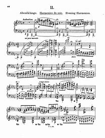

Bộ Transcendental Etudes, S.139 của Franz Liszt là một trong những tác phẩm khó nhất trong lịch sử piano, với yêu cầu kỹ thuật và diễn cảm vô cùng cao. Đây không chỉ là những bài tập kỹ thuật mà còn là những tác phẩm nghệ thuật thực thụ, thể hiện đầy đủ phong cách biểu cảm lãng mạn của Liszt.
STT
Những bar đầu
Nội dung
No 1 - Preludio (C major)
Bài etude ngắn nhất trong bộ, chỉ dài khoảng 12 nhịp, mang phong cách khai pháo mạnh mẽ và hoành tráng, mở màn cho một hành trình đầy thử thách.
No 2 - Fusées (A minor)
Tên gốc của Liszt là Molto Vivace, nhưng đôi khi còn được gọi là "Fusées" (Pháo hoa) vì có những câu chạy ngón nhanh và liên tục, đòi hỏi sự linh hoạt cực cao.
No 3 - Passages (F major)
Etude trữ tình nhất trong bộ, với những giai điệu đẹp như một bức tranh thiên nhiên thanh bình. Yêu cầu về legato và kiểm soát sắc thái rất cao.
No 4 - Mazeppa (D minor)
Một trong những etude khó nhất, dựa trên truyền thuyết về Mazeppa, người bị trói vào lưng ngựa và chạy điên cuồng. Nhạc phẩm có những quãng nhảy lớn và hợp âm kép, tạo nên hiệu ứng hoành tráng và đầy kịch tính.
No 5 - Feux Follet(Bb major)
Đây có lẽ là etude khó nhất trong bộ, nổi tiếng với những đoạn chạy ngón siêu tốc và các bước nhảy bất thường, mô phỏng hình ảnh ánh lửa ma trơi nhảy múa trong đêm.
No 6 - Vision (G minor)
Etude mang phong cách tôn giáo, với những hợp âm hoành tráng và tiết tấu mạnh mẽ, tạo cảm giác như một bản hợp xướng nhà thờ đầy uy nghi.
No 7 - Eroica (Eb major)
Đúng như tên gọi "Anh hùng ca", etude này có những tiết tấu mạnh mẽ, dứt khoát, với nhiều hợp âm kép và quãng nhảy rộng, mang tinh thần của một khúc quân hành.
No 8 - Wlide Jagd(C minor)
Dịch ra tiếng Anh là "Wild Hunt" (Cuộc săn đuổi hoang dã), bài etude này có tốc độ nhanh, mạnh mẽ như một cơn bão. Đây là một trong những bài thể hiện kỹ thuật octaves và chạy ngón nhanh phức tạp nhất của Liszt.
No 9 - Ricordanza (Ab major)
Một etude với giai điệu đẹp như một bản nocturne, đôi khi được gọi là "Chopin của Liszt" vì có nhiều nét trữ tình sâu lắng, nhưng vẫn đòi hỏi kỹ thuật arpeggio và legato hoàn hảo.
No 10 - Appassionata (F minor)
Etude có cường độ mạnh, được đặt tên theo Sonata "Appassionata" của Beethoven. Nó đòi hỏi sự kiểm soát tốt về sắc thái và động lực, kết hợp những quãng nhảy nhanh và hợp âm mạnh mẽ.
No 11 - Harmonies du Soir (Db major)

Một trong những bài etude nổi tiếng nhất, có tính chất như một bản thơ giao hưởng piano. Nó bắt đầu với hợp âm dày, rồi dần dần trở nên mãnh liệt với những arpeggio rộng và chạy ngón phức tạp.
No 12 - Chasse-neige (Bb minor)
Bài cuối cùng trong bộ, với hiệu ứng như bão tuyết cuồng loạn, đòi hỏi kỹ thuật tremolo, chạy ngón siêu nhanh, và kiểm soát sắc thái cực kỳ tinh tế.